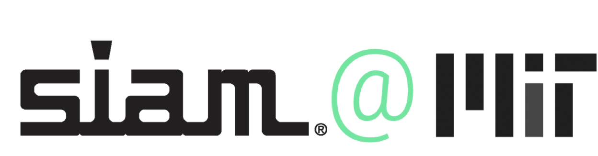

Massachusetts Institute of Technology
Cambridge, MA
Cross-pollinating ideas in applied mathematics
The MIT chapter of the Society for Applied and Industrial Mathematics (SIAM) welcomes undergraduate and graduate students interested in applied mathematics and computational science.
Sign up to give a seminar/talk, or join our mailing list for seminars, workshops, and more!
Apr 17, 2019 [Time + Room TBD]
PAC-Bayes Tree: Weighted Subtrees with Guarantees
We present a weighted-majority classification approach over subtrees of a fixed tree, which provably achieves excess-risk of the same order as the best tree-pruning. Furthermore, the computational efficiency of pruning is maintained at both training and testing time despite having to aggregate over an exponential number of subtrees. We believe this is the first subtree aggregation approach with such guarantees.
Mar 28, 2019
MIT SIAM Coffee Hour + Social
Mar 21, 2019
Distinguished Seminar: Mechanics & Inverse-design of Shape-shifting Structures
Speaker: Prof. Wim van Rees, MechE
Recent progress in additive manufacturing and materials engineering has led to a surge of interest in shape changing plate and shell like structures. Such structures are typically printed in a planar configuration and, when exposed to an ambient stimulus such as heat or humidity, morph into a desired three-dimensional shape. Viewed through the lens of differential geometry and elasticity, the application of the physical stimulus can be understood as a local change in the metric of a two dimensional surface embedded in three dimensions. In this talk I'll provide a short geometric and mechanic background to this problem, and demonstrate a numerical approach for simulating the elastic response to such a metric change for thin structures. I'll show my theoretical contributions on the inverse design of shape shifting bilayers, and discuss how these developments have led to the design and experimental realization of a 4D printed lattice that can undergo complex shape changes.
Mar 14, 2019
Seminar: Transform & Learn: From nonlinear PDEs to low-dimensional polynomial models
Elizabeth Qian, AeroAstro
This talk presents Transform & Learn, a physics-based approach to learning efficient, low-dimensional models for large-scale nonlinear systems. The proposed method starts from the physics of the problem—in the form of governing partial differential equations (PDEs)—and introduces variable transformations to arrive at a state representation in which the system admits a quadratic formulation. The system can then be parametrized by matrix operators, which can be learned from data. To make the problem computationally tractable, transformed state data are projected onto a low-dimensional global basis. The dense, low-dimensional quadratic model is then learned via a least-squares model learning procedure. We demonstrate our method on model problems in fluid dynamics and combustion applications.
Nov 28, 2018
Seminar: Teaching a Neural Network Physics to Help Design Complex Devices
Sam Raymond, CEE
Starting with the first computational weather forecasts, a ridiculously crazy idea a hundred years ago, we'll see how modern climate models work and why uncertainties in climate predictions are so high despite their sophistication. Then I'll talk about how we're trying to reduce uncertainties in climate predictions by developing a new climate model in Julia that runs on massively parallel GPU accelerators and learns from observations and high-resolution simulations.
Seminar: Reducing the Error Bars on Climate Predictions
Ali Ramadhan, EAPS
Starting with the first computational weather forecasts, a ridiculously crazy idea a hundred years ago, we'll see how modern climate models work and why uncertainties in climate predictions are so high despite their sophistication. Then I'll talk about how we're trying to reduce uncertainties in climate predictions by developing a new climate model in Julia that runs on massively parallel GPU accelerators and learns from observations and high-resolution simulations.
Nov 15, 2018
MIT SIAM Coffee Hour + Social
Oct 25, 2018
Seminar: Semiconductor Parameter Extraction (and more!) with Bayesian Inference
Rachel Kurchin, Materials Science and Engineering
Bayesian parameter estimation is a widely-used approach for model optimization in a variety of fields including astrophysics, high-energy physics, and bioinformatics. However, it has not been adopted extensively for electronic device characterization. We have developed a generalized open-source Python code, Bayesim, that accepts sets of observed data as a function of experimental conditions and modeled data as a function of those same conditions as well as a set of parameters to be fit, and outputs a probability distribution over these parameters, accounting for both experimental and model uncertainty. Because models of electronic devices are frequently computationally expensive, we adopt a deterministic and adaptive scheme for sampling the parameter space and computing model uncertainty. I will discuss applications of the code in fundamental characterization of photovoltaic materials as well as current and planned future features, and leave plenty time for discussion of how Bayesim might be useful for your application!
Sep 19, 2018
MIT SIAM / ACSES Joint Coffee Hour
Aug 9, 2018
Distinguished Speaker Seminar: Big Data vs. Big Computation
Prof. Qiqi Wang, AeroAstro
What is the future of computing? Some believe it's big data. For others, it's big computation. Supporters of big data believe that most problems can be solved by gathering huge amounts of data and applying machine learning. Those who believe in big computation, however, postulates that all phenomena in the world can be explained by solving simple physical equations with sufficient computational power. So, who is right?
Jul 30, 2018
Seminar: Iterated Pressure-Correction Projection Methods for the Unsteady Incompressible Navier-Stokes Equations
Jing Lin, MechE
In solving the unsteady incompressible Navier-Stokes equations, typical pressure-correction schemes perform only one iteration per stage or time step, and suffer from splitting errors that result in spurious numerical boundary layers and a limited order of convergence in time. In this talk, we will show that performing iterations not only reduces the effects of the splitting errors, but can also be more efficient computationally than merely reducing the time step. This iteration takes the form of the Richardson iteration applied to the pressure-Schur complement problem. Our analysis also reveals the significant role played by the rotational correction in projection methods. Moreover, we have devised stopping criteria to recover the desired order of temporal convergence, and to drive the splitting error below the time-integration error. We have also developed and implemented the iterated pressure corrections with both multi-step and multi-stage time integration schemes. Our theoretical results are validated and illustrated by numerical test cases for the Stokes and Navier-Stokes equations, using implicit-explicit (IMEX) backwards differences and Runge-Kutta time-integration solvers. It is found that iterated pressure-correction schemes can retrieve the accuracy and temporal convergence order of fully-coupled schemes and are computationally more efficient than classic pressure-correction schemes. Finally, we will draw connections between pressure-correction schemes and classic SIMPLE-based schemes for incompressible flows, which were rarely compared to each other in the literature.
May 29, 2018
Lightning Talks + Lunch
Apr 17, 2018
Distinguished Speaker Seminar: Intro to Julia
Prof. Alan Edelman, Mathematics
What makes a programming language “fast”? Alan Edelman, Professor of Applied Mathematics, gave an introduction to the Julia programming language. Julia is a high-level, high-performance dynamic programming language for numerical computing. It provides a sophisticated compiler, distributed parallel execution, numerical accuracy, and an extensive mathematical function library.